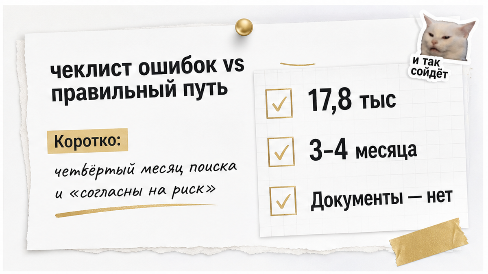
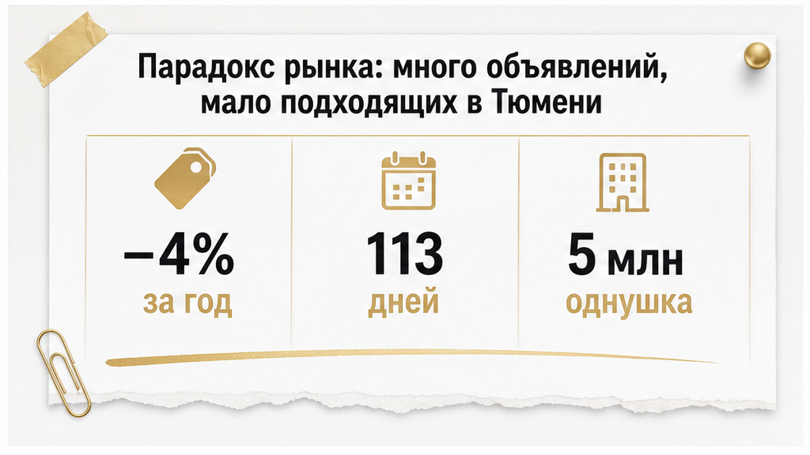
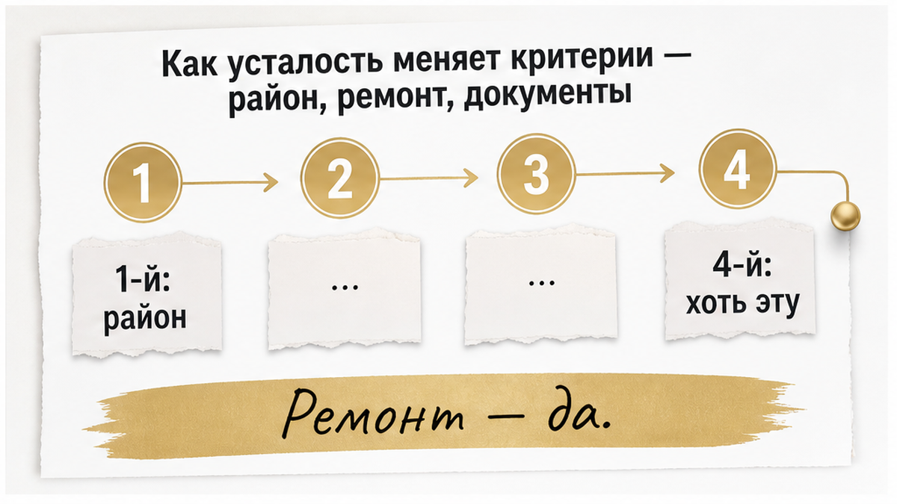

«Святослав, мы четвёртый месяц смотрим. Устали. Согласны на риск — только помогите сделать безопасно».
Звучит спокойно. По смыслу — сдача позиций. Дальше идёт описание квартиры, и в описании уже видно, где будет больно: право перешло к продавцу пару месяцев назад, продают «по доверенности», история собственников читается с трудом. А вопрос ставится не «стоит ли это брать». Вопрос ставится так: «как сделать, чтобы всё было в порядке».
В одной фразе — два взаимоисключающих запроса. «Согласны на риск» значит: мы готовы принять вероятность потерь. «Сделайте безопасно» значит: уберите вероятность потерь. Проверка не превращает рискованный объект в безопасный. Она превращает неизвестный риск в известный. Это разные вещи — и ровно на этой разнице ломаются сделки уставших покупателей.
Если времени мало — вот суть в семи пунктах.

Меня зовут Святослав Шакин, я риэлтор в Тюмени, работаю под именем The Риэлтор. Каждый месяц через меня проходят объекты, которые кто-то уже успел назвать «нормальной квартирой» — потому что смотрел её на четвёртом месяце поиска.
Разборы кейсов и то, как я вылавливаю риски до аванса, а не после, — здесь: Telegram и MAX.

«Там тысячи вариантов, а выбрать нечего». Это не искажение восприятия. Это точное описание рынка.
По июльской публикации Объектив.рф в Дзене Тюмень — лидер среди региональных столиц по объёму экспозиции вторички, около 509 тыс. м². Формально предложение огромное. Но экспозиция — это метры вообще, а покупатель ищет не метры вообще. Он ищет однушку с ремонтом за 4,5–5,5 млн или двушку около шести, в двух-трёх районах, с нормальными документами. В этом сегменте вариантов сильно меньше, чем обещает число объявлений.
Цифры 72.ru от 9 июля 2026 года объясняют, почему стало тяжелее. Объявлений около 17,8 тыс. — на 4% меньше, чем год назад. Средний срок продажи летом 113 дней против 150 в январе. Доля квартир, которые уходят в течение месяца, выросла вдвое. Дисконт сжался: 6% в июне против 6,8% годом ранее и 7,8% в январе. Продавец торгуется меньше, потому что видит очередь.
Цены за год сдвинулись ощутимо. Однушка — около 5 млн против 4,2 млн в июне 2025-го. Двушка — 6,28 против 5,58. Трёшка — 7,2 против 5,95. По данным ЦБ за первый квартал 2026 года новостройки в регионе стоят 138 334 ₽/м², вторичка — 128 812 ₽/м². Разрыв уже не тот, что был в разгар субсидированных ставок, и часть покупателей перетекла во вторичку. Спрос на ипотеку на вторичное жильё в июне 2026 года оказался выше июня 2025-го на 271% и выше января 2026-го на 84%, выдачи за год прибавили около 57% при среднем кредите примерно 3 млн ₽. URA.RU 11 августа 2026 года описывала то же самое проще: в июле вторичка шла вдвое активнее января.
Что это значит для семьи в поиске? Вы конкурируете не с пустым рынком. Вы конкурируете с людьми, которые тоже устали и тоже готовы решать быстро. Отсюда ощущение гонки — и именно оно ломает критерии. Кстати, поэтому же алгоритмы регулярно занижают адекватные объекты: они считают метры и аналоги, но не видят ни очереди на просмотр, ни дефицита подходящего. Механику я разбирал отдельно — когда автооценка выдала цену на два миллиона ниже рынка, а квартиру смотрели в очередь.

Длинный поиск работает как эрозия. Он не ломает решение одним ударом. Он снимает по слою за раз.
Первый месяц: «только этот район, только с ремонтом, только не первый этаж». Второй: «ладно, соседний район тоже посмотрим». Третий: «ремонт сделаем сами». Четвёртый: «ну ладно, хотя бы эту».
«Ну ладно, хотя бы эту» — у меня в работе маркер. Я слышу эту фразу в августе 2026 года чаще, чем год назад, и после неё почти всегда идёт объект, по которому я пишу негативное заключение. Доля таких заключений выросла примерно с 3–5% до порядка 10%. Оговорюсь честно: это моя личная статистика по моим клиентам, а не показатель тюменского рынка, переносить проценты на город нельзя. Но механику она показывает точно. Люди не стали покупать хуже. Люди стали быстрее соглашаться.
И здесь нужно развести два вида уступок, потому что их путают постоянно.
Уступки по потребительским качествам — ваше право и ваш выбор. Район дальше от работы, окна во двор вместо парка, ремонт «под себя», пятый этаж вместо второго. Это ухудшает комфорт, но не создаёт вероятность потерять квартиру. Дорога терпится, ремонт делается, квартира при необходимости продаётся.
Уступки по юридической части — другая категория. Здесь нет градации «чуть хуже». Здесь есть либо понятная история собственности, либо неизвестная. Покупатель, который только что легко отказался от готового ремонта, по инерции отказывается и от вопросов к документам — и думает, что сделал такой же безобидный шаг. Нет.
| Что покупатель снижает на 3–4-й месяц | Обратимо ли после сделки | Чем закрывается до аванса |
|---|---|---|
| Район, удалённость от работы и школы | Да — можно привыкнуть, можно продать | Честным пересмотром бюджета и списка районов |
| Состояние ремонта, планировка, этаж | Да — деньги и время, но решаемо | Сметой на ремонт, а не надеждой «потом» |
| Скорость решения: «берём, пока не увели» | Частично — аванс можно потерять | Фиксацией условий и сроков на проверку |
| Внимание к истории переходов права | Нет — оспаривание бьёт по праву собственности | Выпиской ЕГРН и выяснением оснований |
| Вопросы к обстоятельствам продавца | Нет — банкротство и торги задним числом не отменишь | Проверкой до передачи любых денег |
Отдельно про давление скоростью. Продавец или его агент видит уставшего покупателя за один разговор — и работает с этим: «есть ещё двое, аванс сегодня». Иногда сверху добавляют скидку, и тогда критичность отключается совсем. Как это выглядит вживую, я показывал в разборе про обещанные два миллиона скидки, за которыми в квартире прятался риск. Схема простая: скидка плюс срочный аванс плюс «а дальше как повезёт».
Моя задача в этот момент — не отговаривать вас от покупки. Моя задача — вернуть в решение то, что усталость выключает первым. Последовательность. Сначала выяснили, потом заплатили. Не наоборот.